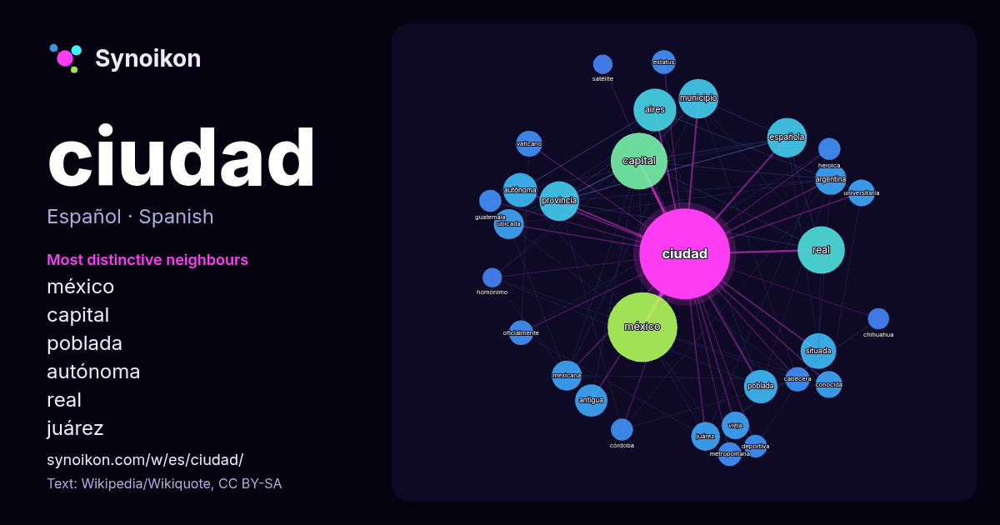

Español · lista de palabras del día
ciudad
“city” · Las palabras encontradas a su alrededor en 1474 apariciones de Wikipedia, Wikiquote.

Vecinos más característicos
- méxico 47×
- capital 37×
- poblada 29×
- autónoma 24×
- real 23×
- juárez 21×
- aires 21×
- situada 20×
- mexicana 19×
- española 19×
- vieja 18×
- vaticano 18×
- universitaria 17×
- antigua 15×
- estatus 14×
- cabecera 14×
- ubicada 14×
- heroica 14×
- metropolitana 13×
- provincia 12×
× = cuántas veces más que en el texto general de Wikipedia.
Vecinos más frecuentes
- méxico 130
- capital 86
- real 60
- aires 49
- española 42
- municipio 42
- provincia 42
- situada 34
- españa 32
- autónoma 31
- poblada 30
- centro 29
- antigua 28
- argentina 26
- club 24
- mexicana 24
- ubicada 24
- juárez 22
- principal 20
- río 20
En contexto
- Una ciudad es un asentamiento humano de tamaño considerable. El término «ciudad» tiene diferentes significados en todo el mundo, y en algunos lugares Wikipedia snippets · Ciudad
- Una ciudad-Estado o ciudad-estado es una ciudad que conforma la totalidad del territorio de un Estado soberano o de un estado correspondiente a la división Wikipedia snippets · Ciudad-Estado
- La Ciudad de Panamá es la capital y ciudad más poblada de la República de Panamá, de la Provincia de Panamá y cabecera del Distrito de Panamá. Está Wikipedia snippets · Ciudad de Panamá
- Ciudad Juárez, oficialmente Heroica Ciudad Juárez (llamada de 1659 a 1888 El Paso del Norte) (en lipán: Tsé Táhú'ayá) es una ciudad mexicana ubicada en Wikipedia snippets · Ciudad Juárez
- Ciudad Real es un municipio y una ciudad de España, capital de la provincia homónima, en la comunidad autónoma de Castilla-La Mancha. Con una población Wikipedia snippets · Ciudad Real
- Una ciudad autónoma es una división administrativa con estatus especial que abarca solo una ciudad o conurbación. En la mayoría de los casos, es un único Wikipedia snippets · Ciudad autónoma
- El movimiento urbanístico de la ciudad jardín fue concebido por sir Ebenezer Howard (1850-1928). Sus ideas, con componentes tanto sociológicos como urbanísticos Wikipedia snippets · Ciudad jardín
- Ciudad Quezon (en tagalo: Lungsod Quezon; en inglés: Quezon City o QC) es la ciudad más poblada de la República de Filipinas, así como el centro urbano Wikipedia snippets · Ciudad Quezon
Más palabras
- agua
- arte
- bosque
- caballo
- camino
- campana
- canción
- ciencia
- clima
- comida
- corazón
- desierto
- dinero
- dios
- espejo
- estrella
- familia
- fuerza
- gato
- historia
- invierno
- isla
- jardín
- lengua
- lluvia
- madre
- mapa
- miel
- montaña
- muerte
- naturaleza
- oro
- otoño
- pan
- perro
- puente
- reloj
- sal
- salud
- silencio
- sombra
- tiempo
- tormenta
- trabajo
- tren
- té
- verano
- verdad
- vida
Precalculado el 2026-10-09 con los ajustes predeterminados (±5 palabras, corpus mediano). El mapa interactivo puede actualizarlo con datos en vivo.
Interfaz traducida automáticamente; se agradecen correcciones.